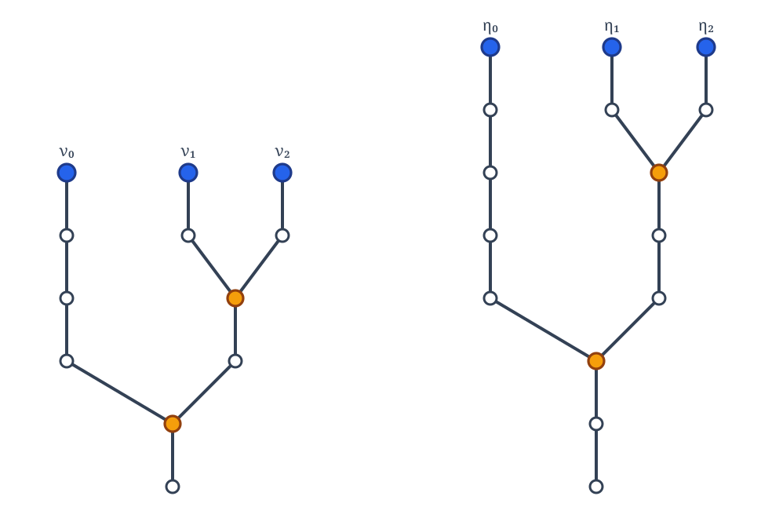
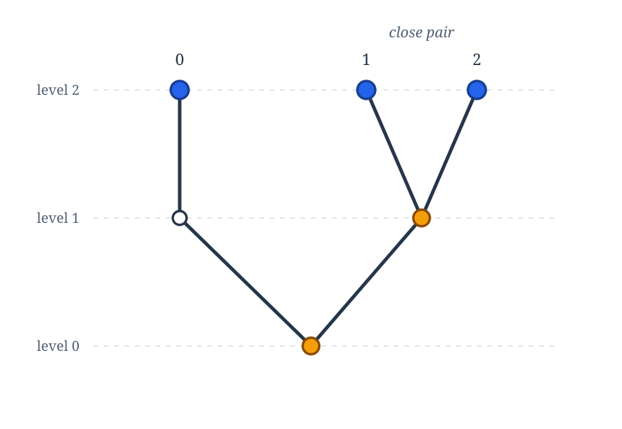
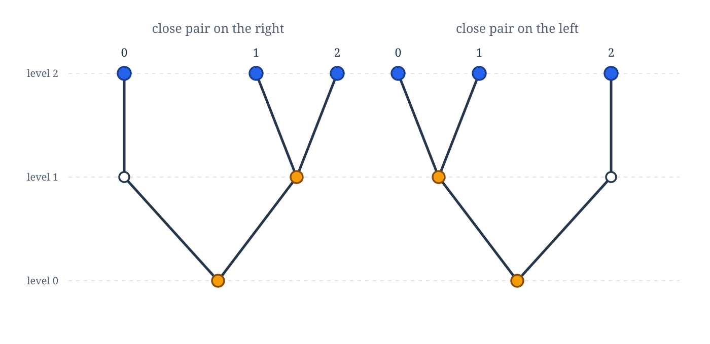
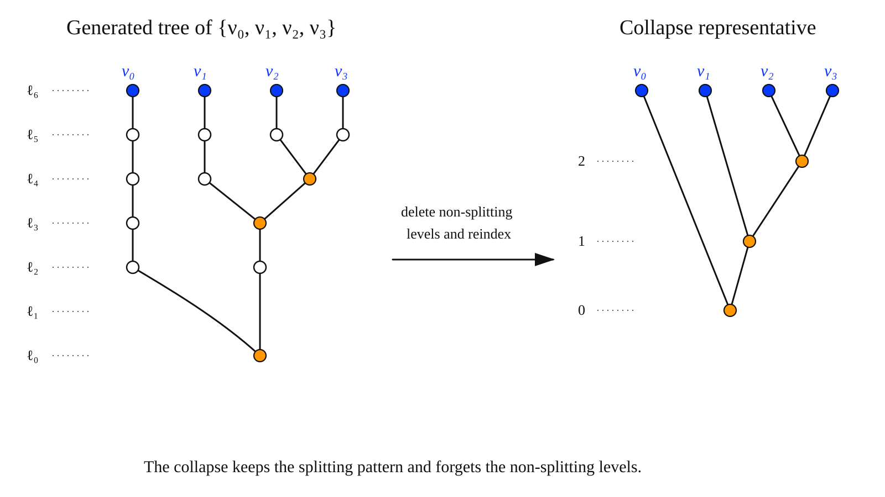
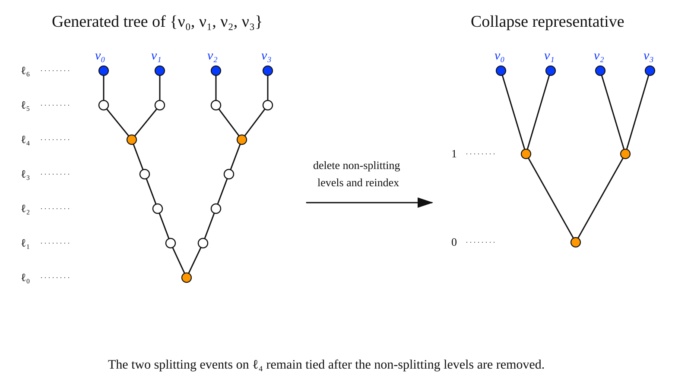

Δ-similarity
The Δ-Similarity Relation
\(\Delta\)-congruence remembers the actual levels at which the branches split, and now we want to define the coarser relation of \(\Delta\)-similarity that looks instead only at the relative pattern of the splitting levels: which split occurs first, which occurs next, and so on. The ideas here appear first in [B].
\(\Delta\)-Similarity
Let \(a\in[2^m]^n\) and \(b\in[2^{m'}]^n\), and let \(h:a\to b\) be the lexicographic order-preserving bijection.
We say that \(a\) and \(b\) are \(\Delta\)-similar if the assignment
for distinct \(s,t\in a\) is a well-defined order isomorphism between the sets of splitting levels of \(a\) and \(b\), and, if this map sends \(\alpha\) to \(\beta\), then
for every \(u\in a\).
Note that if two splitting events occur at the same level in one configuration, then the corresponding splitting events occur must occur at the same level in the other. This means that splitting ties are preserved.
Example: \(\Delta\)-Similar Triples
The following triples \(\{\eta_0,\eta_1,\eta_2\}\) and \(\{\nu_0,\nu_1,\nu_2\}\) are \(\Delta\)-similar but not \(\Delta\)-congruent.

They have the same relative splitting pattern, although the actual levels at which they split are different. The relative splitting pattern can be captured by removing all of the non-splitting nodes, arriving at the following pattern.

In this configuration, the splitting of the two right nodes occurs later, so the close pair of the triple is on the right. On a skew tree, where each level can contain at most one splitting node, there are going to be two similarity types of triples:

More generally, in a skew tree there are going to be at most \((n-1)!\) \(\Delta\)-similarity types of level \(n\)-sets.
In general, the \(\Delta\)-similarity type of an \(n\)-element leveled set \(a\) can be represented by a finite binary tree with \(n\) terminal nodes and exactly \(n-1\) splitting nodes. Essentially, we take the finite tree generated by \(a\) and its meets, delete all levels at which no splitting occurs, and then reindex the remaining levels in increasing order. The following gives us a couple of examples of how this works.
Example: Canonical representatives of similarity types
We see this in action with the following example, where build the canonical representive of the similarity type of set of size \(4\)

Here's another example, where this time the similarity type incorporates a tie:

What is important, though, is that this shows us there are only finitely many possible \(\Delta\)-similarity types for leveled \(n\)-sets.
Given the \(\Delta\)-similarity type of \(a\), its \(\Delta\)-congruence type is determined by the actual splitting levels and the common height of its members. Listing the \(n-1\) splitting nodes in shortlex order gives a code
where \(\ell_0\leq\cdots\leq\ell_{n-2}<m\), repetitions record tied splitting events, and \(m\) is the common height of the members of \(a\).
Homogeneous Colorings
We come now to the final canonization theorem that we will need.
An \(n\)-dimensional level coloring \(d\) is homogeneous on \(T\) if it is constant on every \(\Delta\)-similarity class.
Homogeneity from almost homogeneity
Let \(d\) be an \(n\)-dimensional finite level coloring that is almost homogeneous on a perfect strong subtree \(T\) of \(2^{<\omega}\). Then there is a perfect strong subtree \(S\) of \(T\) such that \(d\) is homogeneous on \(S\).
Proof. Let \(L\) be the level set of \(T\). Fix a \(\Delta\)-similarity type \(\tau\), and let \(r=r(\tau)\) be the number of distinct splitting levels in \(\tau\). For
from \(L\), define
where \(a\) is any realization of \(\tau\) with splitting levels \(d_0,\ldots,d_{r-1}\) and terminal level \(m\). This is well-defined, since any two such realizations are \(\Delta\)-congruent and \(d\) is almost homogeneous.
Thus \(c_\tau\) is a finite coloring of \([L]^{r+1}\). Since there are only finitely many \(\Delta\)-similarity types, finitely many applications of Ramsey's theorem give an infinite \(H\subseteq L\) on which every \(c_\tau\) is constant.
Let \(S\subseteq T\) be a strong subtree with level set \(H\). If \(a,b\) are \(\Delta\)-similar level \(n\)-sets in \(S\), then their splitting levels and terminal levels determine two inputs to the same \(c_\tau\). Hence
Therefore \(d\) is homogeneous on \(S\).
Skew canonization theorem
Let \(n<\omega\), let \(\sigma<\omega\), and let
be an \(n\)-dimensional level coloring. Then there is a skew subtree
on which \(d\) is homogeneous. Consequently, \(d\) takes on at most \((n-1)!\) values on inputs from \(S\).
Proof. By the preceding results, there is a strong subtree \(T\subseteq 2^{<\omega}\) on which \(d\) is homogeneous. Choose a skew subtree \(S\subseteq T\). Homogeneity is preserved under passing to subtrees.
On a skew tree, the splitting levels of a leveled \(n\)-set are all distinct, and there are at most \((n-1)!\) possible \(\Delta\)-similarity types. Since \(d\) depends only on \(\Delta\)-similarity type on \(S\), it takes at most \((n-1)!\) values there.
- [B] Andreas Blass, A Partition Theorem for Perfect Sets, Proceedings of the American Mathematical Society 82 (1981), no. 2, 271–277.